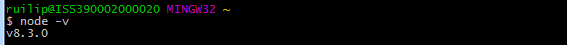
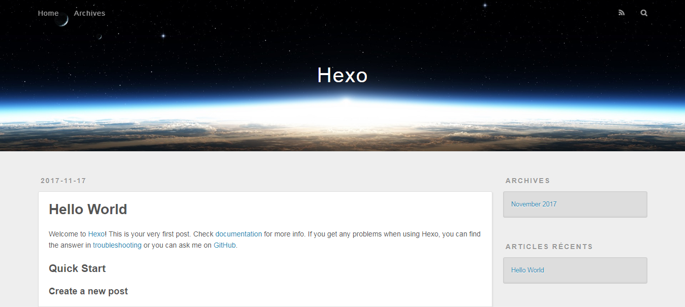
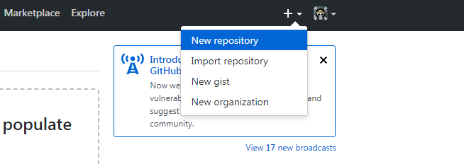
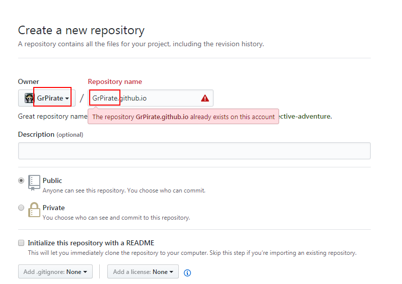

前言
一直以来都想搭建一个属于自己的博客，奈何自己学识尚浅，所需要的知识太多，无从下手。无意间在一篇软文中了解到Github Pages+HEXO这如此高大上的框架，才了解到原来搭建博客可以这么简单。
GitHub Pages的优势
- 1、GitHub Pages 提供了 300M 免费空间，资料自己管理，保存可靠；
- 2、学着用 GitHub，享受 GitHub 的便利，上面有很多大牛，眼界会开阔很多；
- 3、只需简单的几个步骤即可拥有属于自己的网站
什么是Hexo
hexo是一款基于node.js的静态博客生成程序框架
优势
- 免费
- 简单
- 稳定
- 快速
本地使用Hexo生成静态博客
一、运行环境准备
安装完成后打开任意文件夹，在空白处单击右键，选项中有Git Bash Here则说明git下载成功，打开Git Bash Here输入如下命令
node -v
如下图所示输出了版本号即表示node.js下载成功

二、安装HEXO
以下命令均在
Git Bash Here中执行
1.全局安装Hexo
$ npm install hexo-cli -g
2.初始化blog文件夹
blog为文件夹名，可任意取名
hexo init blog
3.进入blog文件夹
cd blog
4.安装依赖和插件
npm install
5.启动服务进行本地预览(括号里为全称)
hexo s(server)
当看到INFO Hexo is running at http://localhost:4000/. Press Ctrl+C to stop.时就说明我们已经搭建起本地的hexo博客了，此时只要在浏览器中输入http://localhost:4000/就可以看到我们的博客了

怎么样，是不是很酷，这是hexo的默认主题landscape.当然hexo还有很多漂亮的主题供我们选择，这是我的博客，使用了Next主题
创建GitHub Pages
首先你得拥有github账号，如果没有点击这里进行注册
好，如果你已经有了账号，可以继续往下读了
创建仓库

登录账号后，在Github页面的右上方选择New repository进行仓库的创建。

在仓库名称输入框里输入GitHub昵称.github.io此处一定要是这种格式，第一项一定需要是自己的GitHub昵称，不然的话就不能作为自己的站点了，上图中是因为我已经创建了，所以提示名称不对。然后点击Create repository即可。
部署到GitHub Pages
1.安装hexo-deployer-git
1 | npm install hexo-deployer-git --save |
2.站点配置Git
1 | deploy: |
- type这里默认为git
- repo后面是你的这个repo的URL，可以在Github上面找到你的repo的地址
- branch表示分支，可以不填，一般为master
3.部署
1 | hexo d |
d就是deploy
如果对文件做了修改使用一下三个命令部署即可
1 | hexo clean |
到这里我们就已经完成了博客的部署工作，在浏览器中输入https://xxx.github.io就可以看到我们的博客网站了
写博客
- 创建文章
1 | hexo new 'pageName' |
此操作会在./source/_posts文件夹下生成一个pageName.md文件和pageName文件夹（存储pageName.md中的图片）
- 设置断点
1 | <!-- more --> |
博客首页只显示<!-- more -->前的内容，在此处显示阅读更多入口